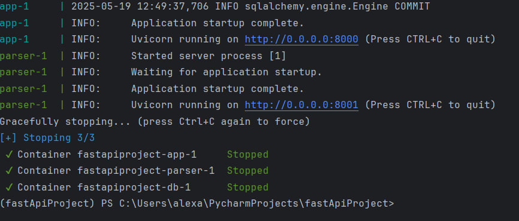
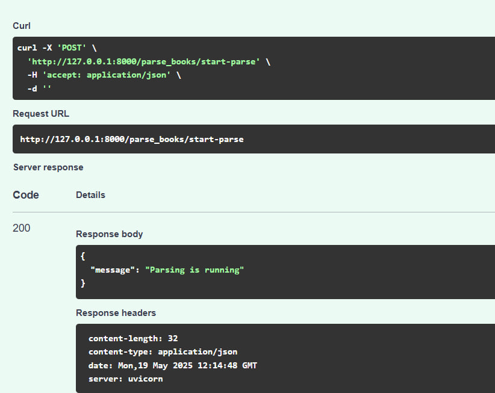
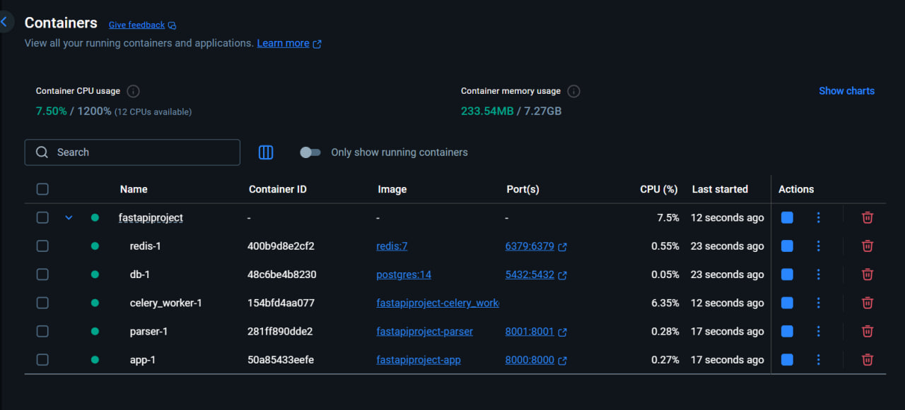
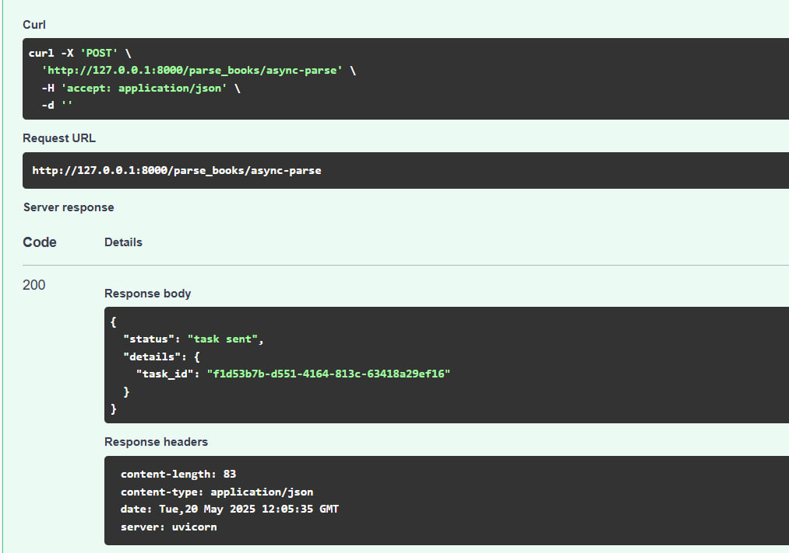
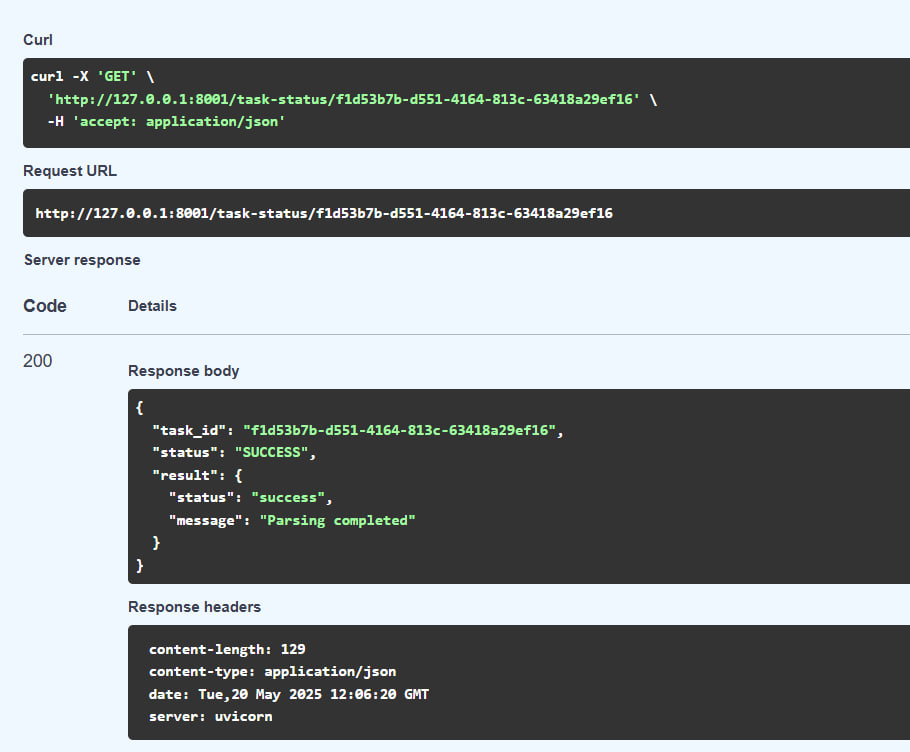
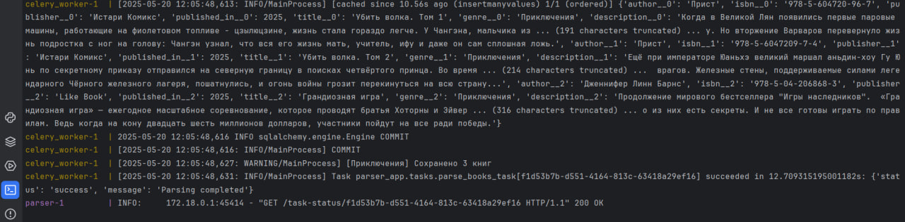

Упаковка FastAPI приложения в Docker. Работа с источниками данных. Очереди.
Задача 1. Упаковка FastAPI приложения, базы данных и парсера данных в Docker
Обновляем структуру проекта:
app- FastAPI-приложение, созданное в рамках ЛР 1;parser_app- отдельное приложение-парсер.
Для каждого приложения создаем Dockerfile.
app/Dockerfile
FROM python:3.11-slim
WORKDIR /app
ENV PYTHONPATH=/app
RUN apt-get update && apt-get install -y --no-install-recommends gcc python3-dev && \
rm -rf /var/lib/apt/lists/*
COPY requirements.txt ./
RUN pip install --no-cache-dir -r requirements.txt
COPY . .
COPY .env .
CMD ["uvicorn", "app.main:app", "--host", "0.0.0.0", "--port", "8000"]
parser_app/Dockerfile
FROM python:3.11-slim
WORKDIR /app
ENV PYTHONPATH=/app
RUN apt-get update && apt-get install -y --no-install-recommends gcc python3-dev && \
rm -rf /var/lib/apt/lists/*
COPY requirements.txt ./
RUN pip install --no-cache-dir -r requirements.txt
COPY parser_app/ ./parser_app/
COPY app/connection.py ./app/connection.py
COPY app/models/ ./app/models/
COPY .env .
COPY . .
CMD ["uvicorn", "parser_app.main:app", "--host", "0.0.0.0", "--port", "8001"]
Создаем общий файл docker-compose.yml для оркестрации основного приложения, парсера и базы данных.
docker-compose.yml
version: '3.9'
services:
app:
build:
context: .
dockerfile: ./app/Dockerfile
ports:
- "8000:8000"
depends_on:
db:
condition: service_healthy
parser:
condition: service_started
env_file:
- .env
healthcheck:
test: [ "CMD", "curl", "-f", "http://localhost:8000/docs" ]
interval: 30s
timeout: 10s
retries: 3
parser:
build:
context: .
dockerfile: parser_app/Dockerfile
ports:
- "8001:8001"
depends_on:
db:
condition: service_healthy
env_file:
- .env
healthcheck:
test: [ "CMD", "curl", "-f", "http://localhost:8001/docs" ]
interval: 30s
timeout: 10s
retries: 3
db:
image: postgres:14
restart: always
env_file:
- .env
ports:
- "5432:5432"
volumes:
- pgdata:/var/lib/postgresql/data
healthcheck:
test: [ "CMD-SHELL", "pg_isready -U ${POSTGRES_USER} -d ${POSTGRES_DB}"]
interval: 5s
timeout: 5s
retries: 5
volumes:
pgdata:
Теперь после выполнения команды docker-compose up запускается 3 контейнера: db, app, parser.
Основное приложение доступно по адресу http://127.0.0.1:8000/docs, а приложение парсера - по адресу http://127.0.0.1:8001/docs.

Задача 2. Вызов парсера из FastAPI
Парсинг в приложении parser_app:
parser_app/main.py
from fastapi import FastAPI, BackgroundTasks
from .db import parse_and_save
from .parser import urls
app = FastAPI()
@app.get("/")
def root():
return {"message": "Parser app is running"}
@app.post("/parse")
def run_parser(background_tasks: BackgroundTasks):
for genre, url in urls.items():
background_tasks.add_task(parse_and_save, url, genre, 3)
return {"message": "Parsing is running"}
Внедряем эндпоинт для парсинга в основное приложение app:
app/api/parser_route.py
import httpx
from fastapi import APIRouter, HTTPException
router = APIRouter(prefix="/parse_books", tags=["Parser"])
@router.post("/sync-parse")
async def start_parse():
parser_url = "http://parser:8001/parse"
async with httpx.AsyncClient() as client:
try:
resp = await client.post(parser_url)
resp.raise_for_status()
return resp.json()
except httpx.RequestError as e:
raise HTTPException(status_code=500, detail=f"Ошибка связи с парсером: {e}")
Теперь при отправке запроса на http://127.0.0.1:8000/parse_books/sync-parse (ранее /start-parse, из основного приложения) отправляется запрос на http://127.0.0.1:8001/parse (приложение парсера).
Результат:

Задача 3. Вызов парсера из FastAPI через очередь
Добавляем файл конфигурации celery_worker.py:
from celery import Celery
import os
from dotenv import load_dotenv
load_dotenv()
REDIS_URL = os.getenv("REDIS_URL", "redis://redis:6379/0")
celery = Celery(
"parser_worker",
broker=REDIS_URL,
backend=REDIS_URL,
include=["parser_app.tasks"]
)
celery.conf.update(
task_serializer="json",
result_serializer="json",
accept_content=["json"],
broker_connection_retry_on_startup=True,
broker_connection_max_retries=10,
task_default_queue='parser_queue',
worker_max_tasks_per_child=1,
worker_prefetch_multiplier=1
)
Создаем задачу для парсинга через очередь в parser_app/tasks.py:
from celery import shared_task
from .db import parse_and_save
from .parser import urls
@shared_task
def parse_books_task():
for genre, url in urls.items():
parse_and_save(url, genre, 3)
return {"status": "success", "message": "Parsing completed"}
Добавляем эндпоинты парсинга через очередь и определения статуса задачи в parser_app/main.py
@app.post("/celery-trigger")
def trigger_parse():
task = celery_app.send_task('parser_app.tasks.parse_books_task')
return {"task_id": task.id}
@app.get("/task-status/{task_id}")
def get_task_status(task_id: str):
task_result = AsyncResult(task_id, app=celery_app)
return {
"task_id": task_id,
"status": task_result.status,
"result": task_result.result
}
Внедряем аналогичные эндпоинты в основное приложение app/parser_route.py:
@router.post("/async-parse")
async def async_parse():
response = requests.post("http://parser:8001/celery-trigger")
return {"status": "task sent", "details": response.json()}
@router.get("/async-status/{task_id}")
async def check_async_status(task_id: str):
async with httpx.AsyncClient() as client:
response = await client.get(f"http://parser:8001/task-status/{task_id}")
return response.json()
Обновляем docker-compose.yml.
redis:
image: redis:7
ports:
- "6379:6379"
volumes:
- redis_data:/data
healthcheck:
test: [ "CMD", "redis-cli", "--raw", "incr", "ping"]
interval: 10s
timeout: 5s
retries: 5
celery_worker:
build:
context: .
dockerfile: ./parser_app/Dockerfile
command: celery -A celery_worker.celery_worker worker --loglevel=info --pool=solo --without-heartbeat --without-mingle
restart: unless-stopped
depends_on:
redis:
condition: service_healthy
db:
condition: service_healthy
env_file:
- .env
environment:
- CELERY_BROKER_URL=redis://redis:6379/0
- CELERY_RESULT_BACKEND=redis://redis:6379/0
volumes:
- .:/app
Теперь с помощью команды docker-compose up запускаются контейнеры db, app, parser, celery_worker, redis.

Парсинг через очередь и проверка статуса задачи:


